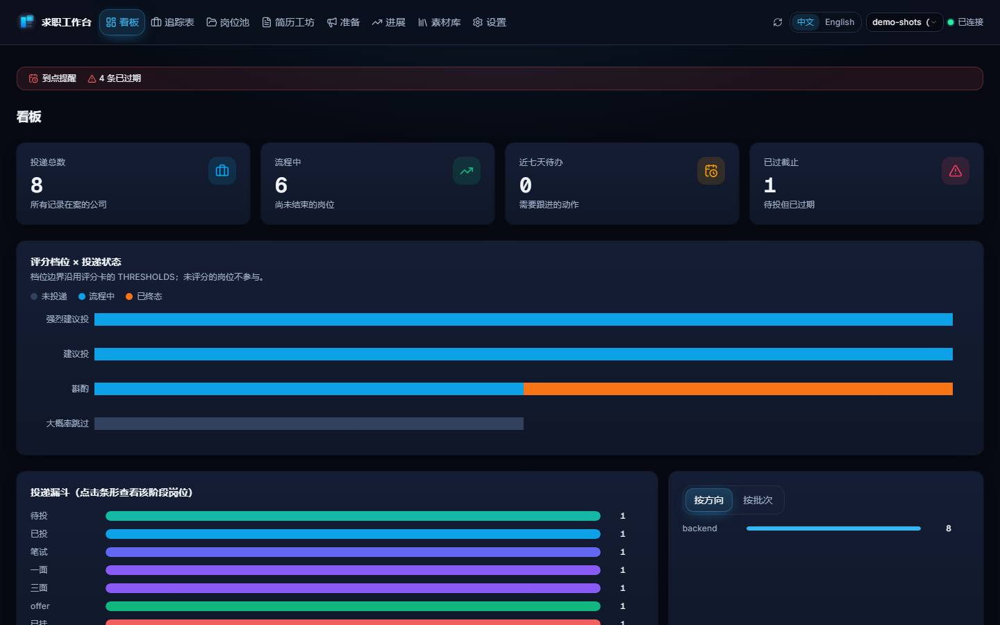
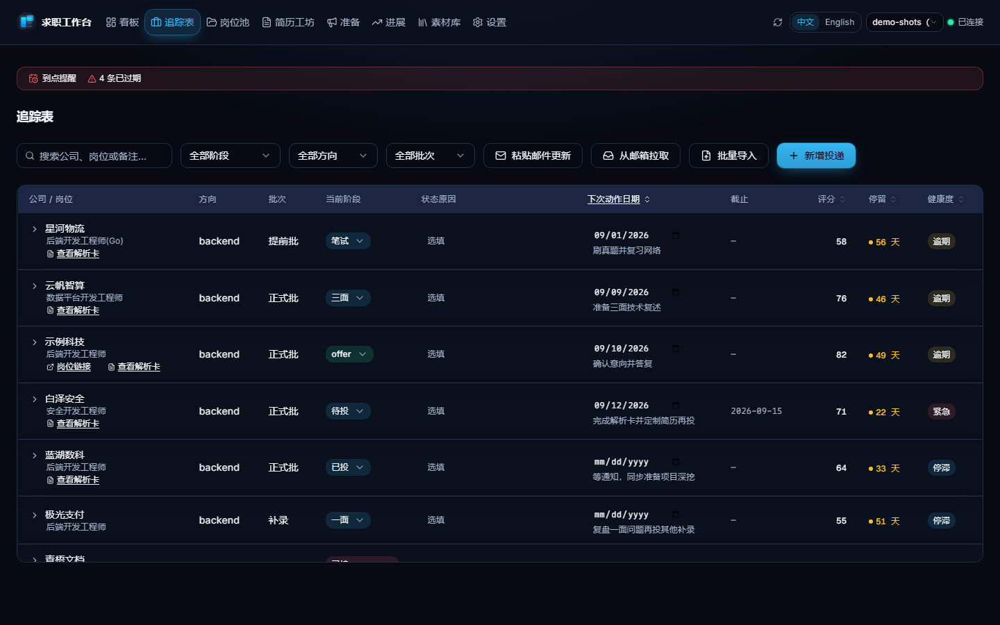
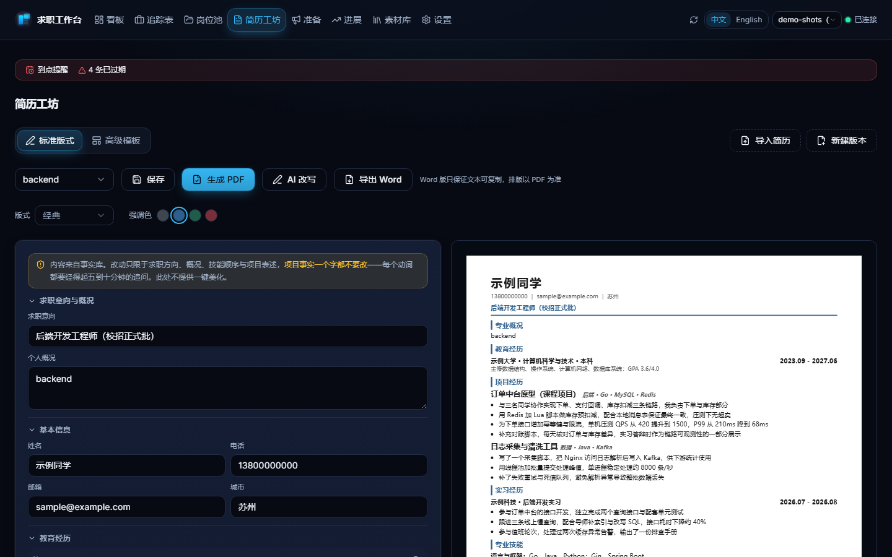
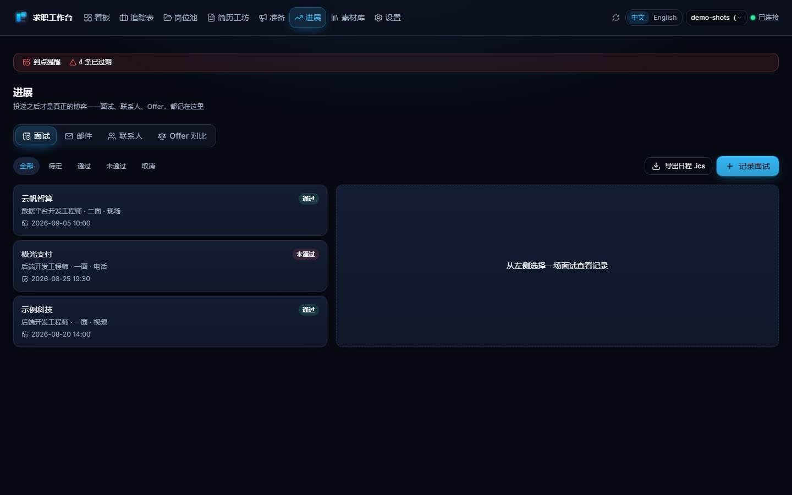

求职工作台
一个本地优先、AI 可审计的求职工作台：从 JD 解析到 offer 决策的完整链路，用纯 Markdown 与 CSV 管理在你自己的磁盘上——可以从桌面端、浏览器或你自己的 AI CLI 三种入口驱动。
当前版本：26.10.0
功能一览
- 四个 AI 工作流：
jwb-jd（JD 解析评分）、jwb-apply（投递包）、jwb-track（追踪看板）、jwb-resume（PDF 重建校验），由仓库内jobwsCLI 驱动——命令速查见使用手册。 - Web 界面：八个页面（看板 / 追踪表 / 岗位池 / 简历工坊 / 准备 / 进展 / 素材库 / 设置）与 CLI 共享同一份数据；简历一键导入是抽取而非生成，AI 改写须过五项本地反编造校验；版式与强调色自由组合，生成的 PDF 全部单栏过 ATS 校验。
- 投递之后的闭环：面试记录一键导出
.ics、联系人跟进提醒、Offer 并排对比（只并排事实，绝不给建议）、版本谱系、周期复盘、失败聚类、投递健康度四态——每条都给出可人工核对的具体理由，而不是一个黑箱分数。 - 只读邮箱拉取（可选）：用你自己的 IMAP 授权码拉取最近的招聘邮件，转成逐条状态建议——只读连接、只在点击时连接、凭证只存本地；邮件永不自动改阶段，一律由你确认。
- 评分框架：资格门槛前置（学历 → 专业 → 届数 → 外语 → 城市），四维度加权五档位；档案没填的岗位判「待补档案」——不打分、不终止、不猜测，补齐即可评。
- 领域插件是数据，不是代码：内置暖通制冷与软件后端两个示例；换专业只要照领域插件合同写一份纯数据插件，
jobws lint domains自动校验结构。
界面预览
以下为中文界面截图，均为 demo 数据（jobws init --target demo --demo，公司、岗位、人名为占位）；英文界面是同样的页面换界面文字，见英文版首页。




快速开始
# 1. 初始化工作区：--domain 换成你专业的插件；只想先看看界面可加 --demo
python tools/jobws.py init --target personal --domain hvac-cooling
# 2. 分发技能 / 命令 / 子代理到你的 AI CLI（CodeBuddy / Claude Code / ~/.agents/skills/）
python tools/jobws.py skills install --target user
# 3. 填好 personal/AGENTS.md 的硬门槛事实，再对 AI CLI 说「解析这份 JD」
命令行只需 Python 3.12+（标准库）；PDF 生成需要 Chrome 或 Edge。不想配环境？下载页提供免 Python / Node 的桌面版安装包。
推广说明
AI 功能是 BYOK：自带任意 OpenAI 兼容服务商的 key 即可。还没有 key 的话，设置页把 OrcaRouter 预置为可选 Provider。如实说明：这是一个推广（返佣）链接——通过它注册会给本项目作者返佣；你的价格与权益不受影响，点击也只是打开网页（本应用不会因点击发出任何数据）。